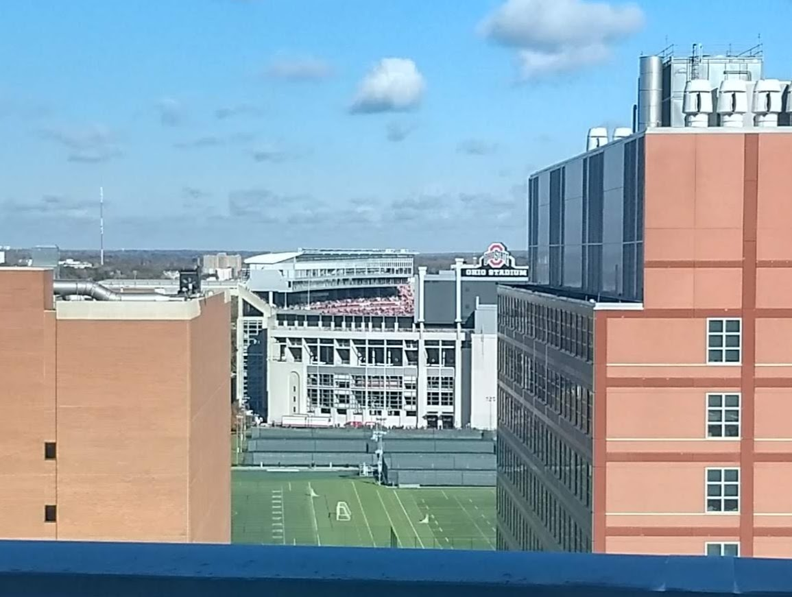

Updates
Medical Details
Nov 6, 2018
I got home yesterday, and I'm feeling pretty good. Everything went smoothly with finishing the hospital stay. The infection was not detectable in my blood after they started the antibiotics. My white counts went up to normal person values. There was a possibility of going home with a PICC line in order to keep doing IV antibiotics, but luckily they decided on a pill that would work. I will need the PICC line inserted just before my next chemo starts since my port was removed. Now I just have one week until the next chemo round starts. Pray that next time will go more smoothly.
Nov 3, 2018
A little more info on the infection for those who like to learn things. It is a gram-negative bacteria called pseudomonas aeruginosa. It is scary because overall, these infections "...are becoming more difficult to treat because of increasing antibiotic resistance" (from CDC). Fortunately, my infection appears to be responding well to antibiotics since my fevers have stopped. They are testing the bacteria from my blood against certain antibiotics to determine which ones to send home with me.
And here is a bonus picture: The view from my hospital window of the OSU/Nebraska game.
Nov 2, 2018
This has been a hard hospital stay this time. There was a bacterial infection (Gram-negative) that they detected in my blood, and because of that, I had my medi-port removed today along with receiving antibiotics. I have been having fevers go up and down since we came in, so sometimes I feel crappy, and sometimes after Tylenol I feel better. But at the moment the fever seems to be holding off on its own, which might be a great sign. I'm feeling pretty good after the port removal surgery; I was not allowed to eat all day, and now I'm chowing down. I will stay until they see the infection clear up and until they see my neutrophils come back up. During all this, I needed three units of platelets and two units of red blood cells. That will help me feel a lot better and have more energy.
Also, yesterday marked my first vomiting since I was diagnosed with cancer! And it was probably more due the infection rather than the chemo from last week.
Nov 1, 2018
Erin: Unexpected trip to ER last night after Eric spiked a fever. White cell/neutrophil counts very low (expected from the chemo). Will remain in hospital until fever stays down and until neutrophil counts return to a certain minimum. Please pray for Eric to have an appetite and protection against infection.
Oct 25, 2018
I got home from the hospital yesterday afternoon. I am feeling about the same as with past chemo treatments; I am super tired, but not feeling horrible. Before going in this week, I was taking pain meds to help with the abdominal pain. But thankfully once the treatment started, I did not need them anymore. We are hoping and praying that the pa ain stays away for this whole treatment cycle. I will be going back in about 3 weeks for round two.
I was also thankful that I was able to play guitar for all three services this weekend at church. It was great to have the ability and energy.
Oct 18, 2018
On Tuesday, we learned that the cancer actually increased during my recent treatment, so we have to switch treatments. Obviously it was not fun hearing this again. We have now experienced a doctor delivering us bad scan news on five occasions including the first one. But the battle must continue. There is still chance of a cure, and without treatment, the cancer will grow rapidly.
We are now going to do a chemo regimen that has been more of a standard of care for a while (instead of another clinical trial). It begins this coming Monday. I'll put the details on my medical details page. It will be a similar experience to the chemo I did earlier this year. As long as we get some response from this treatment, the doctor would like to move quickly to the stem cell transplant which may provide a cure. We are praying that my belly discomfort will not increase this weekend, so I can do my normal stuff (including playing on the worship team). Also pray against worry about the stem cell transplant. It is looming closer in our future, and it will not likely be easy.
On a fun note, we learned today that my oncologist plays classical guitar. He says he hasn't picked it up in a while, so I guess he is spending too much time figuring out how to cure me to do important things like that :)
Oct 12, 2018
A lot has happened since my last post. Since then, my neutrophils recovered so that I could begin round 2 of treatment as planned. Everything went smoothly, but a week and a half ago, my counts were dropping again, so they held medications. As of this past Tuesday, my counts were looking good, so I began just one of the meds again to finish off the cycle through this coming Monday. Sorry if that was confusing, but fortunately I have been feeling pretty good for a while now. Thank God that, with my white cells being up and down, I have never contracted a harmful infection. Oh and since our life wasn't interesting enough, our daughter also had to get stitches a couple weeks ago after hitting her head on a counter at the library! She handled it very well, and she would be happy to tell you the story next time you see her.
Anyway, I have a PET scan coming up this Monday, and I'm potentially starting round 3 of treatment on Tuesday. The possibilities after the scan are:
- We may simply continue treatment if it seems to be working.
- If the scan is really good, then we will start the process to get me to stem cell transplant. We would likely continue this same treatment in the meantime.
- We may need to abandon this treatment, and see if something else might work.
Sept 15, 2018
This week I did not have to get an infusion, but we found out on Tuesday that my neutrophils (infection fighting white cells) are low. I am receiving 4 days of neupogen Thursday through Sunday. That will hopefully have my neutrophils back to normal by Tuesday when I have my next infusion. Next Tuesday will start round 2 of this trial. I'm feeling pretty good this week; the dizziness is gone, and I have been able to get a decent amount of work each week so far. I also started BSF (Bible Study Fellowship) this past Monday, so hopefully I will be able to continue attending most weeks!
August 31, 2018
Everything is still going well. I worked every day in the office this week except Wednesday when I went in for my second infusion. Taking all the pills every day is getting old, but at least they don't make me feel sick. I have had some tiredness and a couple moments of vertigo, but it's hardly anything to complain about.
I had a thought to point people to the National Marrow Donor Program, bethematch.org which I describe at the bottom of my Medical Details page. It would be an easy way to save somebody's life! (There are already matches for me, but don't let that stop you).
August 22, 2018
First treatment is going well today. There were some chances for negative reactions, but I didn't experience anything, thank you God. I received an infusion (IV) of chemo and started taking pills for two of the medications. With that and some other meds, I will have to take about 13 pills per day for most of the month. I will be able to go home and hopefully continue working this week (minus a quick visit tomorrow again for labs). We are hoping that I can keep about 30 hours per week going forward.
August 18, 2018
Erin: The clinical trial starts this week. Eric will be at the hospital all day Weds for an infusion of one drug and then waiting around for labs 8 hours after. Recheck labs again Thurs. He will also take two other lymphoma drugs as pills at home. There will be a total of three infusions in the first four week cycle, two infusions in the second four week cycle, then they will scan. If there's a decent or complete remission at the end of the two cycles he will go directly to stem cell transplant, and preparations for that are already happening. Prayer that Eric will defy the odds and feel great and be able to put in hours of work either from the office or from home. Prayer that his white cell counts recover appropriately so that the second cycle isn't delayed.
August 8, 2018
Erin: Met with doc yesterday. The goal is to try to get a 1) temporary remission with a clinical trial combination of lymphoma drugs so that he can qualify for an 2) allogenic (donor) stem cell transplant, which has a chance for a cure. The clinical trial lasts two months and will start in a couple weeks. In the meantime they have to get new baselines on everything, so he has a tumor biopsy today, bone marrow biopsy next week, extra labs etc.
Specific prayer points:
1) that Eric's body would be cured if it's Jesus' will, and in the meantime will be supernaturally strengthened against the barrage of high intensity drugs he will be receiving (most of which can cause secondary cancers in addition to a myriad of other issues). God has already done this once... Eric's previous treatments have totaled 25 days of continuous chemo, and he didn't lose even 1 pound of weight.
2) For our kids, especially Evalyn, that she would understand an age appropriate but accurate biblical theology on Jesus' death and resurrection and how that gives us hope when our bodies wear out. And we thank God for all the support we have for our kids. This will be a long road.
3) That we would be able to enjoy each day despite the looming stuff. That I would be grateful for the medical system and not keep wishing I could find some magic organic tree bark or chia paste that would do a better job at healing Eric.